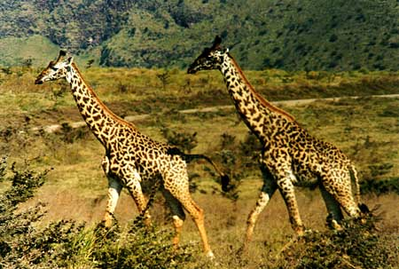

Giraffe.
|
The
only nice picture I could get of these fast running animals. As they have so
long legs, they will disappear very very fast. They didn't seem to enjoy the company of humans too well, so these are the only ones I saw up close for a few seconds. |